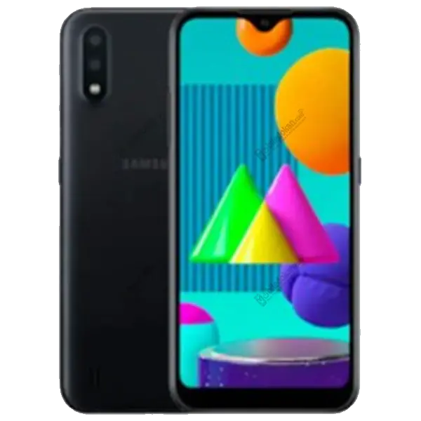

Samsung Galaxy M01 (5G)
সাধারণ তথ্য
- মডেল: Samsung Galaxy M01
- মুক্তির তারিখ: জুন ২০২০
- রং: কালো, নীল, লাল
- ওজন: ১৬৮ গ্রাম
- মাপ: 147.5 × 70.9 × 9.8 মিমি
ডিসপ্লে
- 5.7 ইঞ্চি HD+ PLS TFT স্ক্রিন
- রেজোলিউশন: 720 × 1520 পিক্সেল
- অ্যাসপেক্ট রেশিও: 19:9
- পিক্সেল ঘনত্ব: প্রায় ২৯৫ ppi
হার্ডওয়্যার
- চিপসেট: Qualcomm Snapdragon 439
- প্রসেসর: Octa-core (4×2.0 GHz + 4×1.45 GHz)
- GPU: Adreno 505
- RAM: 3 GB
- স্টোরেজ: 32 GB (512 GB পর্যন্ত microSD কার্ড সাপোর্ট)
ক্যামেরা
- রিয়ার ক্যামেরা: Dual - 13MP (f/2.2) + 2MP (depth sensor)
- ফিচারস: LED flash, panorama
- ভিডিও: 1080p @30fps
- সেলফি ক্যামেরা: 5MP (f/2.2)
ব্যাটারি
- ধারণক্ষমতা: 4000 mAh (Non-removable)
- ব্যাটারি টাইপ: Li-Ion
- ফাস্ট চার্জিং: নেই
কানেক্টিভিটি
- সিম: Dual SIM (Nano-SIM, dual stand-by)
- নেটওয়ার্ক: 4G LTE
- Wi-Fi: 802.11 b/g/n, Wi-Fi Direct, hotspot
- Bluetooth: 4.2, A2DP
- GPS: A-GPS, GLONASS, BDS
- USB: microUSB 2.0
- FM রেডিও: আছে
সেন্সর
- Accelerometer
- Proximity
- Fingerprint সেন্সর: নেই
অপারেটিং সিস্টেম ও অন্যান্য
- অপারেটিং সিস্টেম: Android 10 (One UI 2)
- Color UI: Samsung One UI
- 3.5mm হেডফোন জ্যাক: আছে